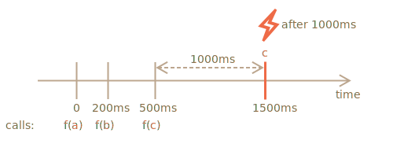

importance: 5
The result of debounce(f, ms) decorator is a wrapper that suspends calls to f until there's ms milliseconds of inactivity (no calls, "cooldown period"), then invokes f once with the latest arguments.
For instance, we had a function f and replaced it with f = debounce(f, 1000).
Then if the wrapped function is called at 0ms, 200ms and 500ms, and then there are no calls, then the actual f will be only called once, at 1500ms. That is: after the cooldown period of 1000ms from the last call.

...And it will get the arguments of the very last call, other calls are ignored.
Here's the code for it (uses the debounce decorator from the Lodash library:
let f = _.debounce(alert, 1000);
f("a");
setTimeout( () => f("b"), 200);
setTimeout( () => f("c"), 500);
// debounced function waits 1000ms after the last call and then runs: alert("c")Now a practical example. Let's say, the user types something, and we'd like to send a request to the server when the input is finished.
There's no point in sending the request for every character typed. Instead we'd like to wait, and then process the whole result.
In a web-browser, we can setup an event handler -- a function that's called on every change of an input field. Normally, an event handler is called very often, for every typed key. But if we debounce it by 1000ms, then it will be only called once, after 1000ms after the last input.
In this live example, the handler puts the result into a box below, try it:
[iframe border=1 src="debounce" height=200]
See? The second input calls the debounced function, so its content is processed after 1000ms from the last input.So, debounce is a great way to process a sequence of events: be it a sequence of key presses, mouse movements or something else.
It waits the given time after the last call, and then runs its function, that can process the result.
The task is to implement debounce decorator.
Hint: that's just a few lines if you think about it :)